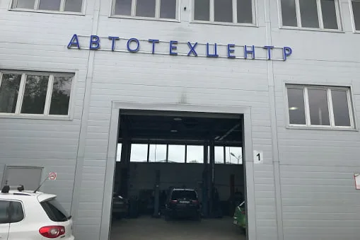

- Главная
- О нас
О компании
Работаем в ЮАО Москвы с 1992 года. Основная специализация — Volkswagen, Audi, Škoda и Seat.

Наша история
История автотехцентра VWS началась более 25 лет назад с создания маленького сервиса, который со своего основания специализировался на ремонте автомобилей Volkswagen и Audi. За столь длительный период времени специалисты нашего центра, совершенствуя свои знания, достигли высокого опыта по работе с автомобилями данных марок.
Современное оборудование, необходимый специнструмент и техническая информация, позволяют нам выполнять ремонт автомобилей VAG любой сложности.
У нас есть опыт в ремонте двигателей, коробок передач, подвески на всех автомобилях линейки VAG.
Мы решаем сложные проблемы с электрооборудованием и топливной системой, поскольку Наши специалисты одни из немногих в Москве, кто берётся за ремонт нестандартных и сложных неисправностей, которые не под силу другим сервисам.
За период работы автотехцентра были налажены прочные партнерские отношения с крупными поставщиками запчастей. В настоящее время в автосервисе представлены автозапчасти и расходные материалы для автомобилей Volkswagen, Аudi, Seat и Skoda в широком ассортименте, как оригинальные, так и их аналогов известных производителей, которые в свою очередь по качеству не уступают оригинальным запчастям, а по ценовой линейки существенно выигрывают у них. Кроме того, налажена система оперативного заказа деталей у официальных представителей запчастей в России и за рубежом.
На все работы и автозапчасти автотехцентр VWS дает гарантию. Мы уверены в качестве наших работ и запчастей. Любой недостаток в работе или в отказе запчастей в период гарантийного срока устраняется бесплатно.
В процессе работы, мы делаем ставку на команду. Каждый член нашей команды лучший в своём деле. Будь это механик, мастер или менеджер – мы будем делать всё от нас зависящее для хорошего результата. Мы внимательно выслушаем наших клиентов, и решим все Ваши проблемы.
Эти не сложные правила дают отличный результат: 9 из 10 клиентов, приехавших впервые, становятся нашими постоянными друзьями.
А наши давние клиенты, по тем или иным причинам сменившие марку своего автомобиля, продолжают обслуживаться в нашем техцентре. И мы с радостью готовы в этом помочь, расширяя нашу техническую базу и базу знаний. Поэтому на сегодняшний день, мы можем с гордостью предложить обслуживание Европейских, Корейских, Японских и других производителей.
Приезжайте, мы будем рады нашему знакомству!
- Опыт с 1992 года34 лет в ЮАО
- Квалифицированный персоналРаботаем по регламенту производителя
- Современное оборудованиеКомпьютерная диагностика
- Свои запчасти на складеAudi, Volkswagen, Škoda
- Гарантия на все виды работ
- Удобное расположениеРядом с метро «Южная»
Отзывы клиентов
Все отзывыАлександр08.04.2024Вчера 07.04.2024 около 13.00 приехал на сервис. Подозревал проблемы с задним суппоротом, скрип и перегрев. Приняли по моей просьбе без записи, за что большое спасибо. Сденлана дигностика продвески,…
Читать полностью
Вчера 07.04.2024 около 13.00 приехал на сервис. Подозревал проблемы с задним суппоротом, скрип и перегрев. Приняли по моей просьбе без записи, за что большое спасибо. Сденлана дигностика продвески, выявили в ноль сточившиеся колодки и изношенные диски. Предыдущий серсви в ноябре ни о чем подобном не предупреждал. В общем и целом замена дисков с колодками (в наличии на складе TRW), по времени около часа или чуть больше, крепление тормозных щитков и подтяжка переднего подрамника, ослабленного предыдущим сервисом при регнулировке сход-развал. Общая сумма за запчасти и работы 18950 руб. Спасибо особое автомеханику выполнявшему работы Александру Строеву. Показал, рассказал, пояснил. Можно было увидеть все сделанное и даже в видеозаписи. Спасибо за работу. Думаю перейти на постоянное обслуживание в этот сервис.
Роман08.11.2023Прекрасная смена слесарей, диагностов и особенно мастеров от 04.11.2023г. Оперативно подошли к вопросу и четко ее решили в коротки период времени. СПАСИБО БОЛЬШОЕ СЕРВИСУ VWS. Постоянное обслуживание…
Читать полностью
Прекрасная смена слесарей, диагностов и особенно мастеров от 04.11.2023г. Оперативно подошли к вопросу и четко ее решили в коротки период времени. СПАСИБО БОЛЬШОЕ СЕРВИСУ VWS. Постоянное обслуживание у Вас это радость для меня и для машины.
Роман08.11.2023Отдельное спасибо Генеральному директору за такую прекрасную выставку самоваров. Просто супер что Вы смогли такое преподнести людям.
Фотогалерея
Все альбомыКонтакты
- г. Москва, 1-й Дорожный проезд, д. 5АЮАО Москвы. Ближайшее метро — «Южная»
- Ежедневно с 8:30 до 20:30Без выходных. Приём автомобилей — круглосуточно
- +7 (495) 260-06-02Эвакуатор: +7 (495) 796-29-99